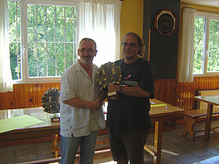

Agustin de Leitza Xake Elkartea |
| » hasiera » elkarteko bazkideak » taldekako txapelketa » azken txapelketak » loturak |
Berauneko pintxetak2010-09-05
Aurten ere Beraunetik gonbidatu gaituzte bere pintxeta txapelketa jolasteko. Edizio honetan talde berri bat gonbidatu dute, Fomento taldea hain zuzen ere, Oreretako beste taldea, eta faborito nagusiak. Hara joan ginen Iosu, Claudio, Felix eta Aritz, eta pixka bat galduta egon ezkero Errenterian, eta hango seinaleak madarikatuz gero, ondo heldu ginen joko aretora. Txapelketa, enkuesta bat egin eta gero, bi faseetan sailkatu egin zen, lehenengoan guztiak guztien kontra jokatu genuen eta lehenengo laurak multzo bat osatuko zuten eta azkenengo laurak beste bat. Guk uste genuen bigarren fase horretan txapelketa berri bat izango zela eta lehenengo faseko puntuak ez zirela kontutan hartuko, gero esan ziguten baietz, eta honek bere garrantzia edukiko du gero garbi geratuko denez. Bukaren denok faso genuen trofeoren bat (trofeo ematea flickr-en ikus daiteke). 
Felixek garailearentzako trofeoa jasotzen. Gure txapelketa, ohi bezala, Fomentoren aurkako porrot batekin hasi zen, gero hobetu egin zen eta garaipena lortu genuen Easo-ren kontra, baina kili-kolo utzi gintuen porrotak. Lehenengo fase honetan Beraunen kontra ere galdu genuen. Azpimarratzeko Gros taldeko mutilek egin zuten papera. Agian teoria gutxi jakingo dute, baina pintxetetan oso ondo aritzen dira. Lehen fasean laugarren bukatu ginen, gure helburua betez. Rosek bigarren sailkatuarentzako trofeoa jasotzen. Bigarren fasearen hasieran esan ziguten aurreko faseko emaitzak kontutan hartuko zirela, ez bakarrik gure artekoa baizik eta denak, eta gainera sorteo berri bat egin zen, ondorioz kolorea errepikatu genuen Fomento eta Fortunaren kontra. Hala ere, bigarren ase honetan askoz ere hobetu jokatu genuen eta Fomentokin berdindu ginen eta irabazi genien Fortunakoei eta Berunekoei 3-1. Beraz azken fase honetan 8 puntuekin bukatu ginen Fometorekin berdinduta, baina bigarren fase honetan guk desenpate hobeagoa eduki genuen, beraz garaile moralak sentitzen gara, nahiz eta ofizialki bigarren amaitu Fomentotik 10 puntura. Gainera, aipatzekoa da Fortunakin eta Beraunekin berreskuratu genituen puntu sorta bigarren posizioan bukatzeko. Trofeo ematean bitxitazun bat gertatu zen, "akatsez" guri eman ziguten irabazleentzako trofeoa eta Fomentori bigarren sailkatuarentzako trofeo, laster konpondu zen konfusioa. |